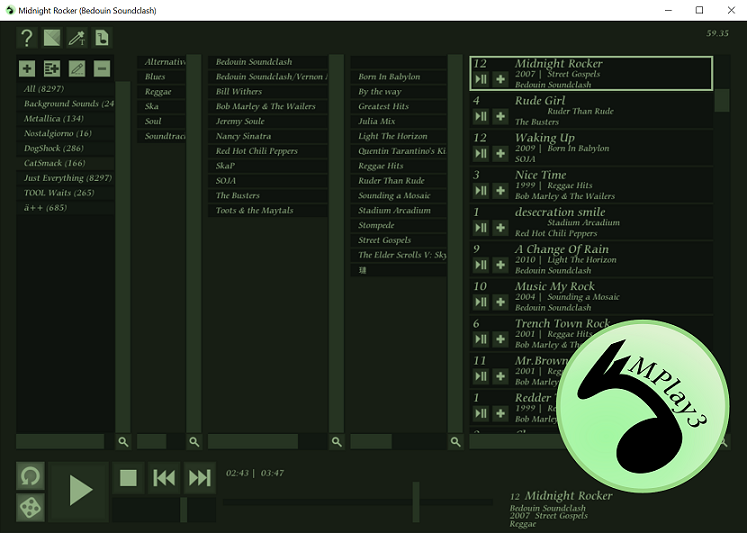
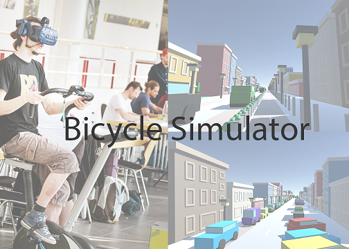
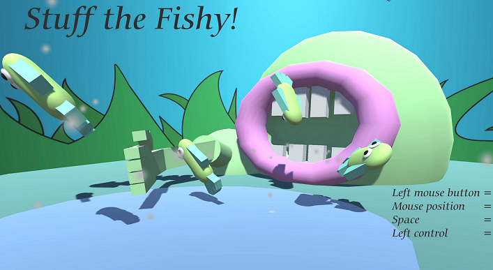
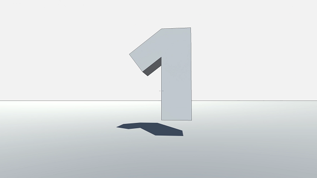
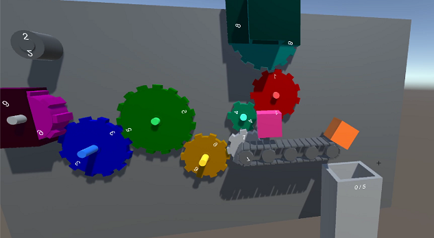
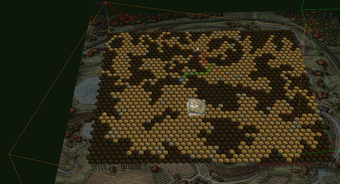

Hello,
these are my hobby projects. I worked on them during my time at the University of Applied Sciences in Gelsenkirchen, Germany during my freetime, hence they are hobby projects...
The first two cards are single projects, because, well, they do not fit in one of the other categories. The first is the entry of a Hackathon I took part in. The second one is the MP3 player I am still working on right now, and which is the longest running hobby project I actually ever had. That is why I did not consider it part of the "C/C++ Prototype" card. More information on the specific project is on their respective page.
|

|

|
MPlay3 - Music Player |
VR-Bicycle Simulation |
The last four cards are groups of projects that fit into these categories. The "A game a day" card are mini-games I created in a single day, as some sort of challenge. "Game Jam" are the two entries I did in the GMTK GameJam for 2019 and 2020. Both Prototype cards are mostly rather unfinished projects of varying amount of work put into them, where I tried out small ideas, mostly for games.
|

|

|

|

|
A game a day |
Game Jams |
Unity Prototypes |
C/C++ Prototypes |